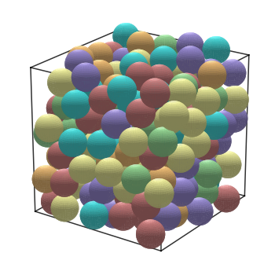
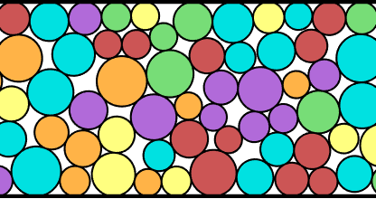
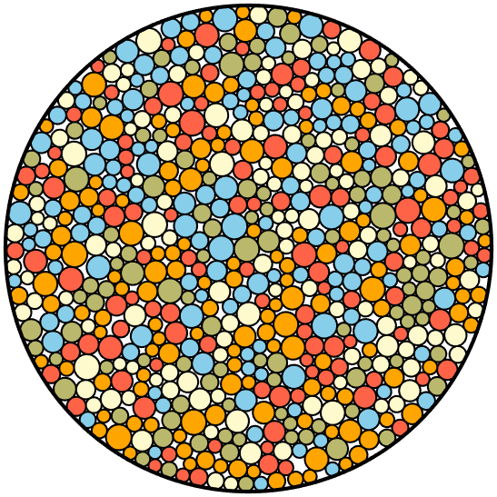
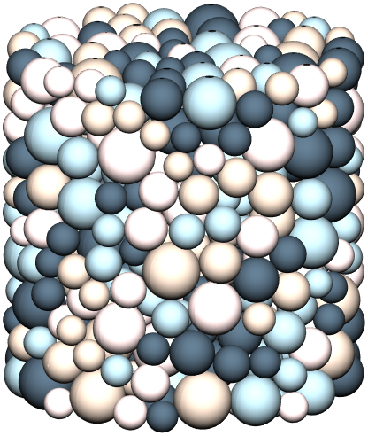
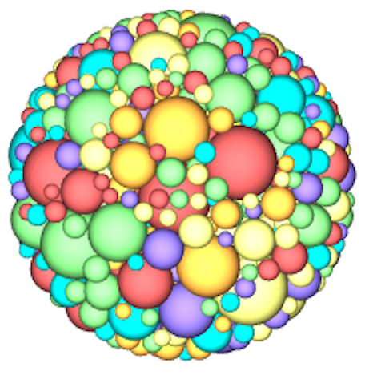

Generating true Random Close Packing is fundamentally more complex than simple random placement. At low densities, "place and reject" (Monte Carlo) methods are sufficient. However, as the system approaches the jamming limit (volume fraction φ ≈ 0.64 for monodisperse spheres in 3D[1]), the probability of placing a sphere without overlap drops toward zero. To generate dense packings, the system must evolve toward a jammed state using either optimization methods or dynamical simulations.
rcpgenerator
rcpgenerator is an open-source Python library for generating dense, jammed packings of
non-overlapping spheres. Unlike simple rejection-sampling methods that fail at high volume fractions,
this toolkit uses an optimization-based "inflation" approach to reach the
Random Close Packing (RCP) limit (φ ≈ 0.64).
from rcpgenerator import Packing
# Initialize 200 spheres in a unit cube
p = Packing(N=200, Ndim=3, box=[1,1,1]) # See Colab notebook for more examples and settings
# Evolve the system toward a jammed configuration
final_packing = p.pack()
# Visualize the final packing
p.show_packing() # should only take a few seconds to run
p.show_packing(figsize=(4,4)) # could take tens of seconds
Example output: 200 monodisperse spheres packed into a unit cube near the RCP limit (φ ≈ 0.64).




Running the code above produces a jammed configuration — a state in which every particle is in contact with its neighbors and no individual particle can move without displacing others (although there may be a few "rattlers"). For monodisperse spheres in three dimensions, this jammed state is reached near a volume fraction of φ ≈ 0.64, known as the Random Close Packing (RCP) limit[1]. Approaching this limit through naive random placement quickly becomes intractable: as the system densifies, the probability of inserting a new sphere without overlap drops rapidly, and insertion eventually becomes effectively impossible well below the jamming point. Reaching true RCP therefore requires an algorithm that evolves the entire configuration collectively toward the jammed state. Two broad classes of methods have emerged for this, each making different physical assumptions and offering different computational tradeoffs.
rcpgenerator is a Python library for generating dense, jammed packings of hard particles,
using an ADAM optimizer implemented in C++ with Python bindings to optimize the packing
of spheres into confined or unconfined containers. Spheres can be randomly packed into cylindrical
containers, spherical containers, circular containers (2D disks), or periodic and hard-wall rectangular
boxes. The library supports arbitrary spatial dimensions, with hypersphere packings tested up to 7D,
and handles highly polydisperse size distributions with stable convergence for particle size ratios
greater than 100 in 2D.
| Geometry | Dimensions | Description |
|---|---|---|
| Box | 2D, 3D, ND | Rectangular container with periodic or hard-wall boundaries |
| Cylinder | 3D | Cylindrical confinement for sphere packing |
| Circle | 2D | Circular confinement for disk packing |
| Sphere | 3D | Spherical container for hard sphere packing |
Suitable as both a sphere packing generator for computational geometry and as a particle packing simulation tool for computational physics and materials science modeling.
Two common approaches are used in the literature to create such packings.
These methods allow particles to slightly overlap during the optimization process[2]. The idea is:
In well-converged packings, overlaps are typically extremely small (often ~10−3 of the particle diameter or less). Position updates can follow either physics-inspired force updates or purely mathematical optimization methods.
Another class of algorithms simulates true hard spheres colliding like billiard balls[3]. In these algorithms:
These methods follow physically realistic particle dynamics and have been widely used to study hard-sphere systems.
These methods primarily use energy minimization, force-biased algorithms, or geometric inflation. They are often highly efficient for reaching static jammed states but may skip the intermediate physics of a settling system.
| Package | Functionality | Language | Specialization | Difficulty | Link |
|---|---|---|---|---|---|
| RCP Gen | Fast generator for arbitrary dimensions (ND). MATLAB version of this code. | MATLAB | Made for RCP | Easy | FileEx |
| Circle Dist | Solves charge distribution problem that creates RCP. | MATLAB | Made for Packing | Easy but slow | FileEx |
| Pack-spheres | Brute-force/stochastic circle and sphere packing. | JavaScript | Configurable | Easy | GitHub |
| Pyspherepack | Quick-and-dirty gradient-based optimization using Autograd. | Python | Made for Packing | Easy | GitHub |
These use Molecular Dynamics (MD), Discrete Element Method (DEM), or event-driven simulations. They provide high epistemic stability for studying physical packing kinetics and non-spherical geometries.
| Package | Functionality | Language | Specialization | Difficulty | Link |
|---|---|---|---|---|---|
| VasiliBaranov/PackingGen | Comprehensive suite for Lubachevsky–Stillinger, Jodrey–Tory, and Force-Biased algorithms. | C++ | Made for RCP | Moderate | GitHub |
| ParticlePack | DEM-based shaking/shuffling for spherical and irregular grains. | C# / Unity | Packing & Beyond Spheres | High | GitHub |
| LAMMPS | Massive-scale MD for granular systems and hard spheres. | C++ / Python | Configurable | High | Website |
| YADE | Open-source DEM simulator for granular and particulate media. | C++ / Python | Configurable | High | Website |
| HOOMD-blue | GPU-accelerated MD/HPMC for hard particles and shapes. | Python / C++ | Configurable | Moderate | GitHub |
Physics-based updates typically involve an associated step size (typically a time step) that must remain relatively small for numerical stability, and slow dramatically for highly polydisperse packings where the largest-to-smallest particle size ratio is large. Optimization methods, on the other hand, can take larger non-physical steps toward the minimum overlap configuration and tend to be more stable in highly polydisperse cases.
Because of this, optimization approaches often reach dense packings more quickly — allowing one to
generate packings of 1000+ particles in seconds to minutes — although the intermediate states do not
correspond to a physically realistic trajectory. In practice, structural properties of packings
generated by optimization algorithms tend to agree well with physical experiments (packing fraction,
structure factor, coordination number, etc.). rcpgenerator uses an optimization-based
approach (ADAM optimizer) to separate particles as they grow in size.
The packing fraction at jamming is not a universal constant — it depends strongly on spatial dimension, and in ways that reveal deep geometric structure. In three dimensions, random close packing reaches φ ≈ 0.64[1], but this figure decreases rapidly with increasing dimension. The underlying reason is a counterintuitive property of high-dimensional geometry: as dimension grows, the volume of a sphere becomes increasingly concentrated in a thin shell near its surface rather than in its interior. Concretely, for a d-dimensional sphere of radius R, a surface shell of thickness ε contains a fraction 1−(1−ε/R)d of the total volume — a quantity that approaches 1 as d → ∞ for any fixed ε/R. Because most of each particle's volume is skin rather than core, particles interact primarily near their surfaces, pore volume expands rapidly, and even fully jammed configurations occupy a diminishing fraction of the total space — with packing fractions roughly halving with each additional dimension for random packings.
Two dimensions is a notable exception in two distinct ways. First, monodisperse disks in 2D do not readily form stable disordered packings — instead, the system tends to crystallize into large hexagonal domains or a mosaic of hexagonal grains, because the geometry strongly favors the ordered hexagonal lattice (φ ≈ 0.91)[6]. Introducing polydispersity (a distribution of particle sizes) is generally necessary to frustrate this ordering and generate a genuinely amorphous 2D packing. Second, 2D packings are topologically unusual in that the pore space is non-percolating: at jamming, there is no continuous pathway through the gaps between particles from one side of the system to the other. This follows from a fundamental constraint of planar topology — if the particle contact network spans the system (as it must at jamming), the complementary pore network cannot simultaneously form a connected path across it. In three and higher dimensions both the solid particle backbone and the pore network can percolate at the same time, and pore connectivity grows with increasing dimensionality as more directional freedom becomes available for pathways to thread through the structure. This transition in pore topology has direct physical consequences for transport phenomena: it underlies why 3D granular and colloidal packings support fluid flow and diffusion in ways that dense 2D monolayers do not.
The rcpgenerator package handles these dimensional variations directly, supporting jammed
packing generation from two dimensions up through at least seven. This makes it a practical tool for
researchers investigating how structural and topological properties of jammed states — packing
fraction, coordination number, pore connectivity — evolve across dimensions.